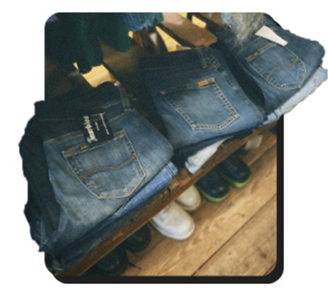

Ontdek vintage verhalen!
Unieke stukken
Op vintage apps en in de winkels liggen kledingstukken vanuit heel Europa. Deze zijn dan lokaal gemaakt en ze zijn vaak ook heel uniek. Ik heb persoonlijk meerdere merkloze stukken vanuit Italie en toch is het ook nog goedkoop en van goede kwaliteit!
Vind jouw eigen stijl
Doordat er zulke unieke kleding te vinden is in vintage, kies je ook echt iets wat eigen is. Daarnaast is er ook heel veel kleding te vinden dat je niet bij jezelf vind passen en dus moet je vaak goed zoeken totdat je iets hebt wat je écht wilt. Dit zorgt ervoor dat je ook echt jouw stijl vind.